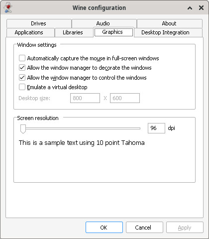

司徒目前使用Box86 + Wine當作開發測試環境，Box86可以用來執行Intel x86指令集的程式，Box64則是可以用來執行Intel x64指令集的程式，而Wine則是可以用來跑Windows程式，Wine是Windows API層相容，但不是二進制層相容，意思就是，如果Wine是ARM armhf版本的話，Wine執行的程式就必須是ARM armhf指令集的程式，而如果Wine是Intel x86/x64版本，Wine執行的程式就必須是Intel x86/x64指令集的程式，這也是為何Windows PE程式(Intel x86/x64)可以在Linux PC(Intel x86/x64)下用Wine執行的原因，而司徒目前是要在手機上開發Windows x86/x64程式，所以需要使用Box86 + Wine，使用的Wine版本支援Intel x86(wine)/x64(win64)程式，安裝步驟如下：
$ cd $ wget https://github.com/steward-fu/website/releases/download/pro1/Box86-64_Wine86-64.sh $ chmod a+x ./Box86-64_Wine86-64.sh $ ./Box86-64_Wine86-64.sh $ WINEPREFIX=~/.wine_x86 box86 wine winecfg
如果字型太小，建議DPI設定成144

$ cd $ wget https://github.com/steward-fu/website/releases/download/vc/vc6_extract.zip $ unzip vc6_extract.zip $ cd ~/.wine_x86/drive_c/Program\ Files $ unzip ~/vc6.zip
添加環境變數
$ vim ~/.wine_x86/system.reg
"INCLUDE"="C:\\Program Files\\Microsoft Visual Studio\\VC98\\atl\\include;C:\\Program Files\\Microsoft Visual Studio\\VC98\\mfc\\include;C:\\Program Files\\Microsoft Visual Studio\\VC98\\include"
"LIB"="C:\\Program Files\\Microsoft Visual Studio\\VC98\\mfc\\lib;C:\\Program Files\\Microsoft Visual Studio\\VC98\\lib"
"MSDevDir"="C:\\Program Files\\Microsoft Visual Studio\\Common\\MSDev98"
"PATH"="C:\\Program Files\\Microsoft Visual Studio\\Common\\Tools\\WinNT;C:\\Program Files\\Microsoft Visual Studio\\Common\\MSDev98\\Bin;C:\\Program Files\\Microsoft Visual Studio\\Common\\Tools;C:\\Program Files\\Microsoft Visual Studio\\VC98\\bin"
測試環境變數是否設定正確
$ WINEPREFIX=~/.wine_x86 box86 wine nmake
Microsoft (R) Program Maintenance Utility Version 6.00.8168.0
Copyright (C) Microsoft Corp 1988-1998. All rights reserved.
NMAKE : fatal error U1064: MAKEFILE not found and no target specified
Stop.